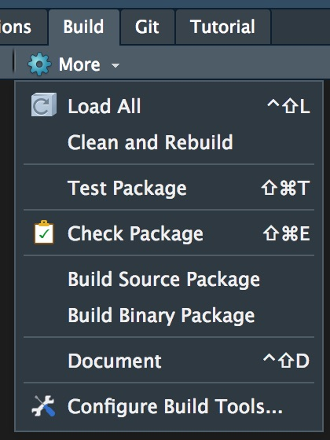

Software Design, Development, and Distribution in R
Lindsey Dietz, PhD\(^1\)
Christina Knudson, PhD\(^2\)
2020-10-30
WiADS_Slides.RmdDr. Dietz’s Disclaimer
The views expressed in this presentation are strictly my own. They do not necessarily represent the position of the Federal Reserve Bank of Minneapolis or the Federal Reserve System.
About Us
- Friends since meeting in our Statistics PhD program in 2011
- Co-organizers of R Ladies-Twin Cities and the noRth conference
- Both cyclists & coffee lovers

Objectives of this talk
library(MyFirstPackage) # Best practices for R package design design_package() # Building an R package build_package() # Distribution of your R package distribute_package()
Why use a design document
- splits the work into two steps (thinking and coding)
- makes you explain everything in detail (so you can know if you understand the details)
- helps you predict problems/tricky points
- helps you divide the work into reasonable modules so you can split it between days or people and make sure it it will come together seamlessly
- Helps future you/developers understand what you had done so that you can create improvements or additions
What to include in your design document
- goal of each function
- inputs and outputs of each
- flow chart between functions
- calculations/equations
- any tricky points
- numerical stability considerations
- how you will approach each function, including pseudo code if it’s nontrivial
- tests you will implement (again goals, details)
- Helpful sketches
- Major updates
- Things you want to add/change in the future
Create the Package
Building a package used to take a lot of expert knowledge. However, several R packages exist that now make the process extremely accessible.


Check, build, and install your package
devtools::check() devtools::build() devtools::install()
Or use the build tools in Rstudio 


Why Distribute Your R Package?
- Gains in usership/citations for those in the public domain (academics, nonprofits)
- Gains in productivity for those in private industries
- Saving future you time

Using Version Control
- This is not a Git talk, but Git has become a dominant version control technique so we are demo-ing our work on Github
- An amazing and free resource for R users is Jenny Brian’s book: https://happygitwithr.com/
How this is useful to audit Production version control - put R in prod Focus more on why to use - maybe RStudio easy integration with github
How this is useful to audit/third parties Easy to track changes over time Issue driven development (working with teams) https://github.com/tidyverse/dplyr/issues Production version control - put R in prod reference to talk
Where to Find Us
Find this presentation at: https://github.com/knudson1/WiADS2020/blob/master/doc/Presentation_Slides.pdf
Lindsey Dietz
- Email: lindseydietz13@gmail.com
- LinkedIn: https://www.linkedin.com/in/lindseydietz/
- Twitter: https://twitter.com/lindseydietz13
Christina Knudson
- Email: knud8583@stthomas.edu
- LinkedIn: https://www.linkedin.com/in/christinaknudson/
- Twitter: https://twitter.com/canoodleson